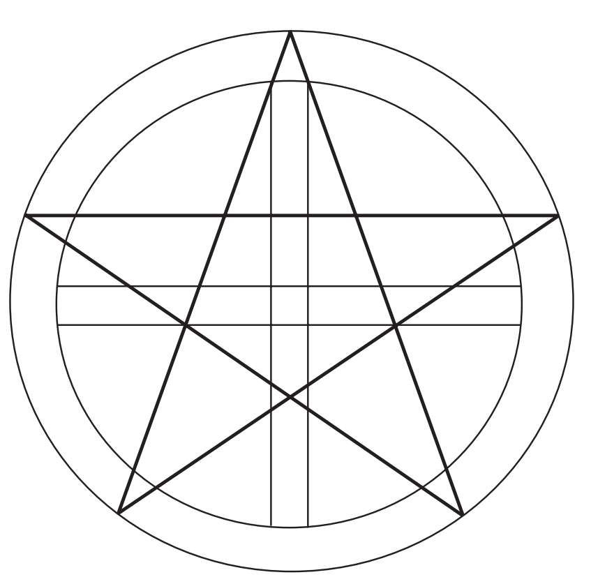

人们自古以来就抬头仰望星空，那么古人为什么会用五角星来代表星星呢？常识告诉我们那是因为星星会闪烁。高层大气中空气密度的变化会造成一种星光闪烁的视觉效果。虽然我们的祖先在很早以前就试图通过观察星空来破解其中的奥秘，但直到今天星空依旧没有什么变化。用五角星来代表星星可以追溯到很久以前，人们在美索不达米亚的泥板以及埃及的象形文字中都发现了五角星。
神秘的毕达哥拉斯学派将五角星作为自己的标志。对于他们来说，“pentad”（数字5）代表着健康与美丽。据推测，数字“2”是大于1的第一个偶数，又称“diad”（数字2），数字“3”是大于1的第一个奇数，又称“triad”（数字3），5=2+3，因此5被认为是和谐的象征。

作为神秘组织的标志，五角星是一个具有悠久历史的几何图形。它不仅出现在玫瑰十字会的谜题中，还经常出现在共济会地方分会的标志中。
五角星还经常出现在我们的日常生活中并且被广泛使用。举例来说，它出现在洛杉矶的好莱坞星光大道上，象征着各类明星，同时也是很多革命团体的标志。
它是许多旗帜上的核心图形，但这并不意味着所有印着五角星的旗帜都会用来宣扬革命思想。它出现在摩洛哥等一些伊斯兰国家的国旗上，代表着伊斯兰教的五功。除此之外，美国国旗上代表各州的星星也是五角星。
马蒂拉·吉卡（1881—1965）
马蒂拉·吉卡身兼罗马尼亚王子、作家、罗马尼亚的外交官、数学家等身份，后来在美国成为大学教授。他是一名研究黄金比例的学者，在《自然与艺术中的比例美学》（Aesthetic of Proportions in Nature and in the Arts，1927）、《黄金数》（The Golden Number，1931）等著作中讨论过黄金比例，现在这些书都被视为经典。他的著作成功地将黄金比例这一主题引入现代欧洲文化中。他在这些书中提出了一个仍然广为人知的论题，那就是古典时代的希腊艺术家有意识地运用了黄金比例。虽然这是一个非常流行的观点，但并未被其他专家接受，而且一直存在争议。
吉卡的作品试图涵盖所有的古典知识，他尤其关注柏拉图哲学以及柏拉图的观点，认为数字是超越了抽象概念的存在。这些作品在世界各地广受欢迎，虽然支持者有时过于热情，但其中仍不乏像法国诗人保罗·瓦莱里这样的名人。